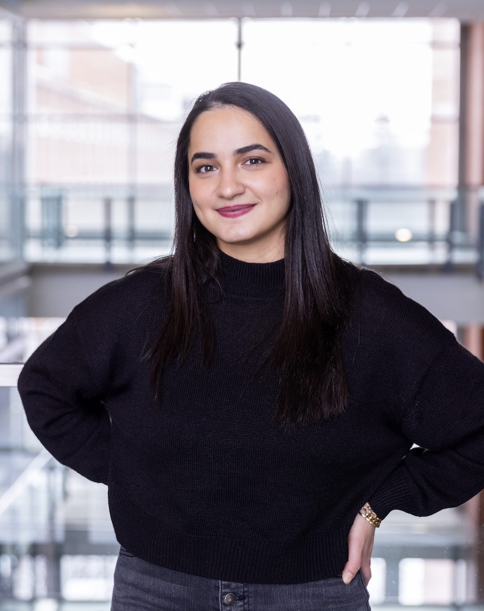
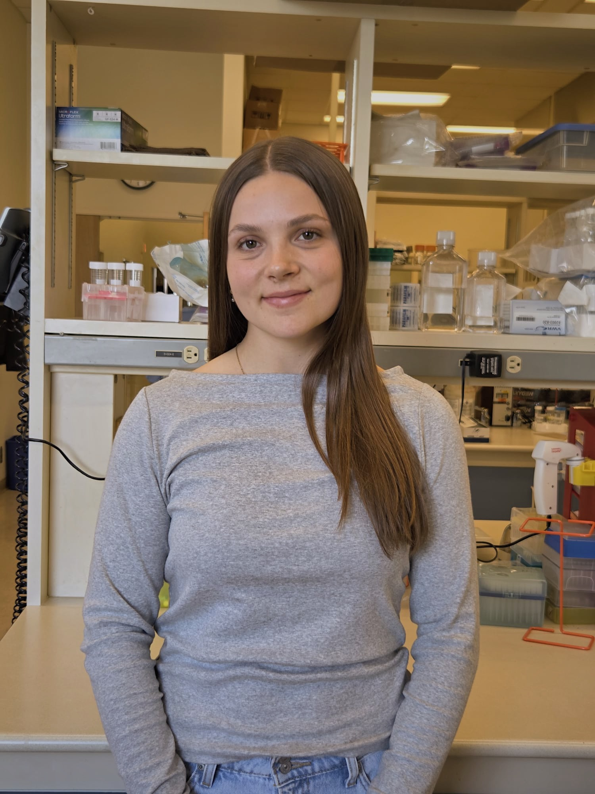

Current Lab Members

Rim Daher
Research Staff
Rim Daher holds a Master’s degree in Molecular Biology and Genetics from the University of Alberta. Her graduate research focused on post-fertilization pathways in C. elegans, where she used CRISPR-based genome editing and confocal microscopy to identify and characterize novel components of the MEMI pathway.
Her research training has provided her with a strong background in molecular genetics, genome editing, molecular biology, and advanced microscopy. She has also been actively involved in teaching and mentoring and has received multiple recognitions for her academic and teaching excellence, including two Graduate Student Teaching Awards.
In the Mirzaei Lab, Rim applies her expertise in molecular and cellular biology, CRISPR technologies, and microscopy to investigate tumor biology and tumor–immune interactions. Her work contributes to the lab’s efforts to understand the molecular mechanisms that regulate cancer progression and therapeutic response.

Elizabeth Reid
MSc Student
Elizabeth Reid is a graduate student pursuing her Master’s degree in Cancer Sciences at the University of Alberta. She previously earned her Bachelor’s degree in Honours Biochemistry from the University of Victoria, where she developed a strong interest in understanding the complex interactions between cancer and the immune system.
Her academic training has provided her with a strong foundation in biochemistry, molecular biology, and cancer biology. Through her graduate studies, Elizabeth is expanding her expertise in tumor biology and tumor–immune interactions while developing the experimental and analytical skills needed to investigate mechanisms underlying cancer progression and therapeutic response.
In the Mirzaei Lab, Elizabeth contributes to research aimed at understanding how cancer cells interact with the immune microenvironment. She is particularly interested in expanding her expertise in cancer biology and contributing to collaborative research that can advance our understanding of cancer and ultimately inform the development of improved therapeutic strategies.